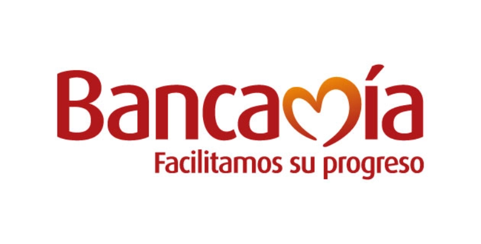

Consulta tu estado del
Ingreso
Solidario
Ingreso
Solidario
Por favor ingresar tus datos personales para revisar el estado de entrega
de tu ingreso
de tu ingreso
Ingreso Solidario
Debido a la situación generada por el COVID-19,
el gobierno nacional aportará a las familias más afectadas
y que no pertenezcan a ningún programa social,
un subsidio por $160.000
el gobierno nacional aportará a las familias más afectadas
y que no pertenezcan a ningún programa social,
un subsidio por $160.000
¿Qué es el Ingreso Solidario?
Es un esquema mediante el cual se entrega una
transferencia monetaria en favor de los hogares
en situacion de pobreza y vulnerabilidad que
que no sean beneficiarios de programas sociales del estado.
transferencia monetaria en favor de los hogares
en situacion de pobreza y vulnerabilidad que
que no sean beneficiarios de programas sociales del estado.
Los hogares en situacion de pobreza
y vulnerabilidad, afectados en sus
ingresos como concecuencia de la pandemia del coronavirus
, que no hagan parte de los programs sociales
"Familias en acción","Colombia Mayor","
Jóvenes en Acción" y "Devolución del IVA"
podran acceder a esta medida social.

Etapas de Entrega
Etapa 1
Etapa 2
Etapa 3
Desde el 7de abril
9 de abril al 18 de abril
18 de abril al 25 de abril
Bancos Autorizados



Preguntas Frecuentes
1
Yo habia salido como beneficiaria en la primera fase y ahora no aparezco
en el listado de beneficiarios ¿Es decir, ya no recibiré el beneficio?
en el listado de beneficiarios ¿Es decir, ya no recibiré el beneficio?
Estamos actualizando el listado de beneficiarios que recibieron el giro.
Si encontro su nombre en la primera etapa y esta plenamente
identificado, no ha perdido su beneficio.
Si encontro su nombre en la primera etapa y esta plenamente
identificado, no ha perdido su beneficio.
2
¿Por qué no aparezco ahora en el listado de ingrsosolidario.properidadsocial.gov.co?
Estamos actualizando el listado de beneficiarios que recibieron el giro.
Si encontro su nombre en la primera etapa y esta plenamente
identificado, no ha perdido su beneficio.
Si encontro su nombre en la primera etapa y esta plenamente
identificado, no ha perdido su beneficio.
3
¿Que debo hacer porque me llego el mensaje que soy beneficiario y no he recibido pago?
si usted fue informado de que es beneficiario del programa mediante un mensaje de texto
enviado por la entidad financiera en la cual tiene una cuenta o depósito activo
comuniquense con esa entidad financiera para averiguar como acceder a los recursos del ingreso solidario
si usted no tiene cuenta o deposito con el sistema financiero , y es elegido
dentro del programa ingreso solidario,pronto recibira un mensaje con
las instrucciones para hacer la apertura de una cuenta digital.
enviado por la entidad financiera en la cual tiene una cuenta o depósito activo
comuniquense con esa entidad financiera para averiguar como acceder a los recursos del ingreso solidario
si usted no tiene cuenta o deposito con el sistema financiero , y es elegido
dentro del programa ingreso solidario,pronto recibira un mensaje con
las instrucciones para hacer la apertura de una cuenta digital.
4
Consulté en la página web y soy beneficiario, pero aún
no me han llamado ni he recibido mensaje de texto ¿Qué debo hacer?
no me han llamado ni he recibido mensaje de texto ¿Qué debo hacer?
Si usted encontró su nombre y cédula en la base del beneficiarios y no ha recibido un mensje de texto, significa que hace parte
de un ciclo posterior de pagos. Durante esta etapa , las entidades financieras se conctatarán con usted
para darle las indicaciones de como recibir el giro o hacer la apertura de un deposito simplificado a través de su celular.
de un ciclo posterior de pagos. Durante esta etapa , las entidades financieras se conctatarán con usted
para darle las indicaciones de como recibir el giro o hacer la apertura de un deposito simplificado a través de su celular.
5
¿Qué debemos hacer lo que somos beneficiarios. pero no tenemos celular o cambiamos de número?
Prosperidad Social está trabajando con diferentes organizaciones y
fuentes de datos para ubicarlo y conctactarlo.
Lo invitaremos a consultar periodicamente la página.
fuentes de datos para ubicarlo y conctactarlo.
Lo invitaremos a consultar periodicamente la página.
¿Tienes más preguntas?
Por favor no dudes en contactarnos par poderte dar la informacion que necesites
contáctanos